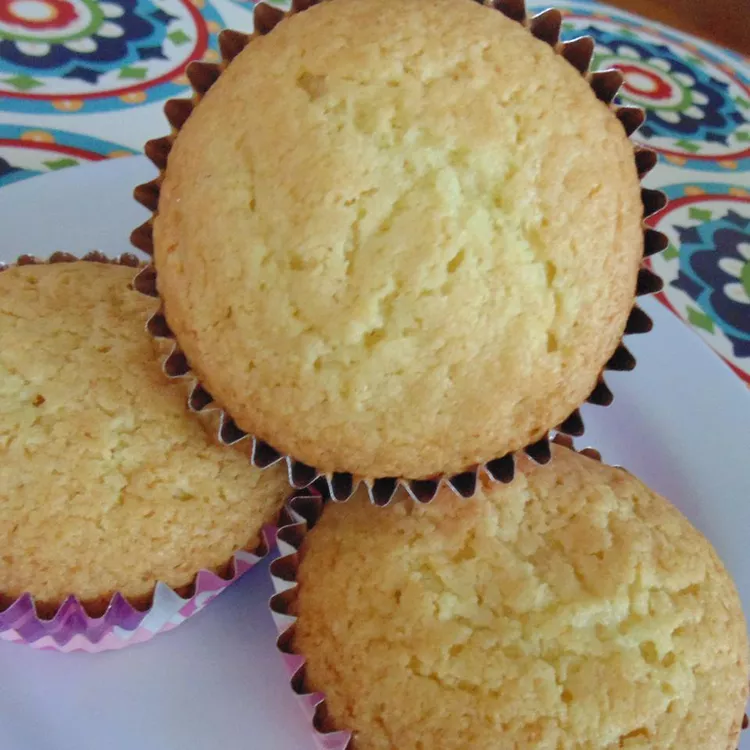

Fairy Cakes
A very simple fairy cake recipe to start from!

Ingredients:
- 1 cup of butter, softened
- 1 cup white sugar
- 1 3/4 cups self-raising flour
- 4 large eggs, beaten
Steps:
- Preheat the oven to 350 degrees F (175 degrees C). Grease two 12-cup muffin tins or line cups with paper liners.
- Beat butter and sugar together in a large bowl with an electric mixer until light and fluffy. Add 1/2 of the flour and 1/2 of the eggs; beat until smooth. Add remaining flour and eggs and beat until batter is light and fluffy.
- Spoon batter into the prepared muffin cups, filling each 3/4 full.
- Bake in the preheated oven until tops spring back when lightly pressed, about 10 to 12 minutes. Cool in the tins for 5 minutes. Transfer to a wire rack to cool completely.